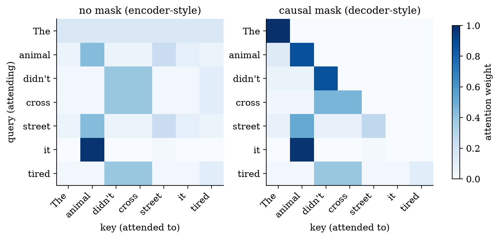
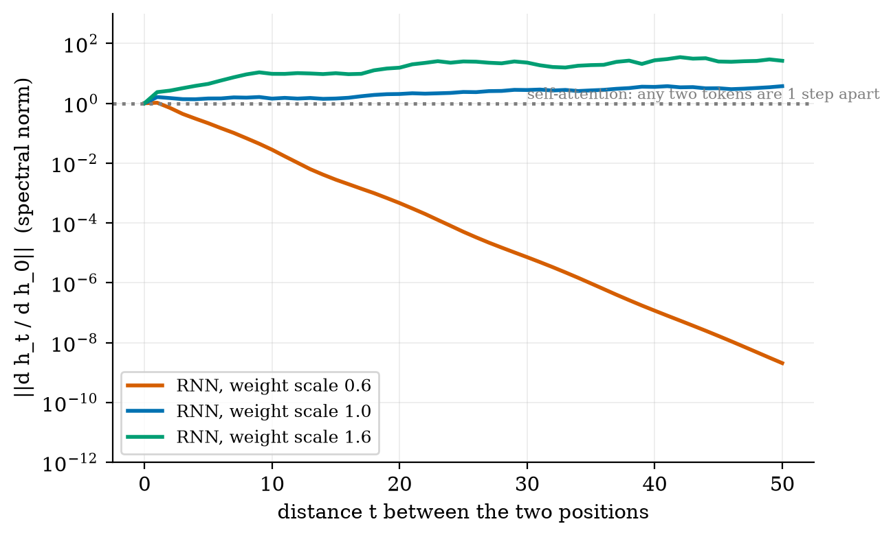
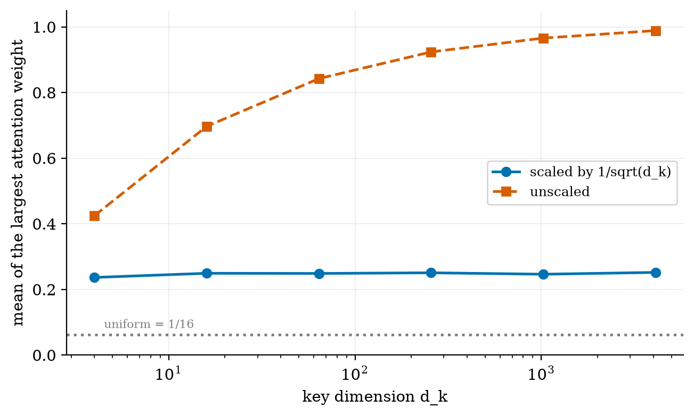
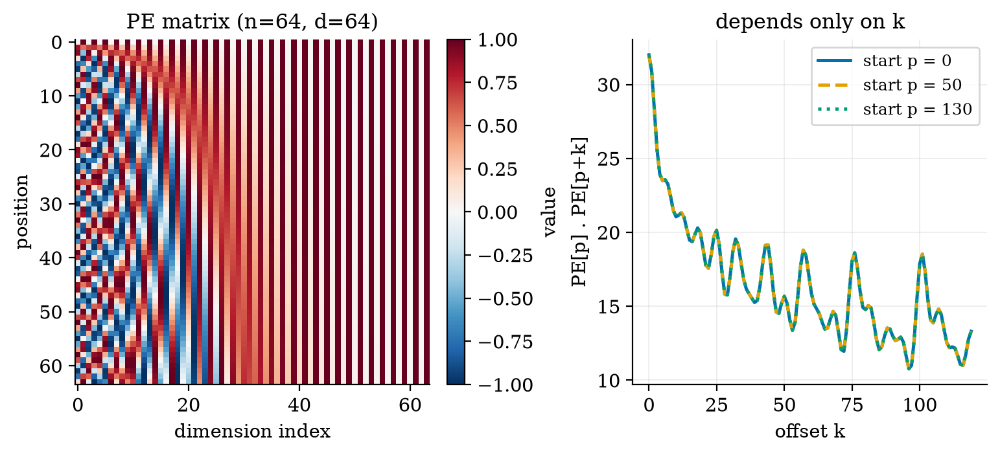
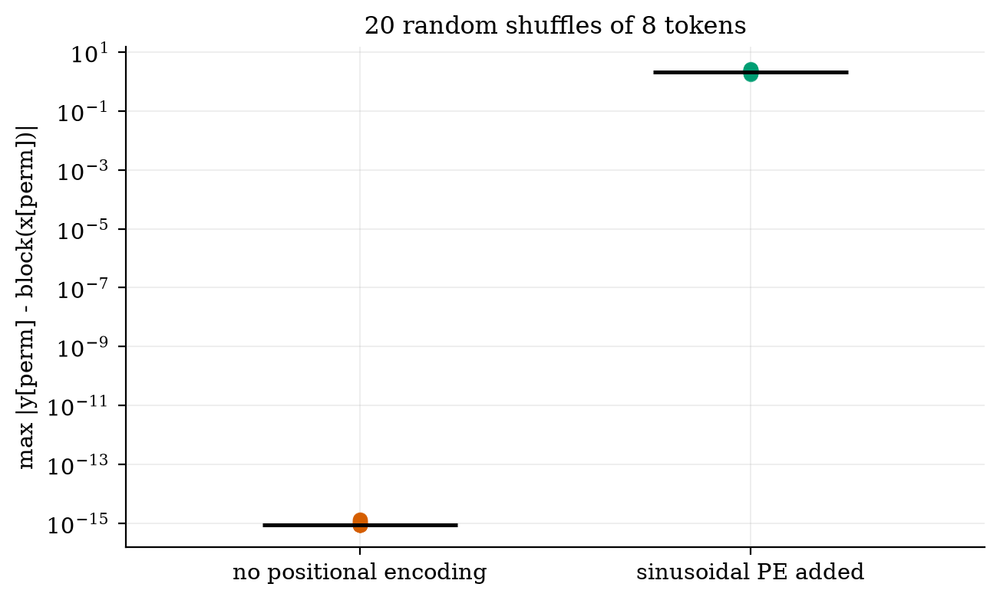
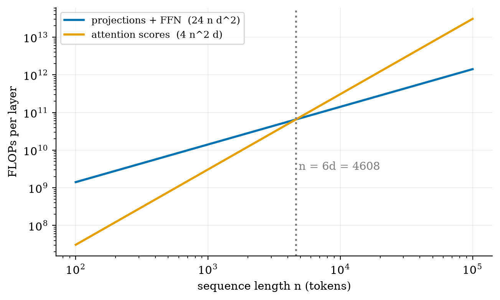

explain why recurrent networks struggle with long sequences, using a measured number;
compute scaled dot-product attention by hand and say what query, key and value mean;
derive why we divide by √dk, why positional encoding is needed, and why the sinusoid gives relative offsets;
count the parameters and FLOPs of a Transformer block and find the length where attention starts to dominate;
say which of BERT, GPT and T5 is an encoder, a decoder, or both.
The big picture
A word’s meaning depends on other words, possibly far away. In “The animal didn’t cross the street because it was tired”, it must look back at animal.
Old way: recurrent networks. Read one word at a time and carry a running memory. Slow (step t waits for step t−1) and the signal from early words must survive many updates.
New way: attention. Let every word look directly at every other word and take a weighted average of what it finds. The weights come from a similarity score between a query (what I need) and each key (what you offer); the thing handed over is the value.
A Transformer block = attention (words talk to each other) + a small feed-forward network (each word thinks alone), both wrapped in residual connections and layer normalisation. Stack a few dozen of them and you have an LLM. Attention alone ignores order, so a positional encoding is added to tell the model which word is where.
Key equations
Scaled dot-product attention. Each row of the softmax is how much one word reads from each other word.
Raw scores grow with the key width; scaling keeps the softmax from saturating.
Sinusoidal positional encoding.
The similarity of two positions depends only on how far apart they are.
Weights and biases of one Transformer block with dff=4d.
Sequence length where attention scores cost as much as all the dense layers.
Figures

A hand-built seven-token example: the row for “it” puts 0.98 of its weight on “animal”. Right: a causal mask hides later words.

Gradient size across distance in a recurrent network: it vanishes for small weights (2×10−9 after 50 steps) and does not behave predictably otherwise.

Without the 1/√dk scaling, the largest attention weight goes to 0.99 as dk grows: the softmax saturates.

Left: the positional-encoding matrix. Right: similarity between position p and p+k for three different p; the curves coincide exactly.

Shuffling the tokens changes nothing without positional encoding (9×10−16) and a lot with it (≈2).

Dense layers cost ∝ n, attention scores ∝ n²; they cross at n = 6d = 4608 for d = 768.
Try it in the playground
Each link opens the widget with good starting settings. Every option has a plain-English label and a one-line help text.
Attention heatmap
Edit a sentence, pick a word, switch masks, and watch who reads whom.
Plain NumPy again. After downloading and unzipping the All code (.zip):
pip install -r requirements.txt
python codes/llm/transformer_np/transformer_np.py # runs one block, prints the parameter count 3280 = 12d²+13d
python codes/llm/transformer_np/tests/test_transformer_np.py # 9 tests, prints: ok
python figures/fig01_attention.py # reproduces Figure 1
The module contains attention, mha (multi-head, self or cross), block, sinusoidal_pe, rnn_gradient_norms and the FLOP counters.
A note on the numbers. My count of the original base model (63.0M parameters) is within 3% of the paper’s 65M; the remaining 2M is unresolved and flagged as an open thread in the PDF.
Self-check
Answer in your head first, then click to reveal.
What are the shapes of QKᵀ and of the attention output?
QKᵀ is nq×nk; the output is nq×dv.
Why divide the scores by √dk?
A dot product of two unit-variance vectors has variance dk. Dividing keeps it at 1 so the softmax does not saturate.
What happens to token order if you add no positional information?
Nothing is distinguished: shuffled inputs give identically shuffled outputs, so the model cannot see order.
What does a causal mask forbid?
Looking at later positions, so a decoder cannot read the word it is trying to predict.
Which of BERT, GPT and T5 use cross-attention?
T5 (encoder-decoder). BERT is encoder only; GPT-style models are decoder only.
At what sequence length do attention scores cost as much as the dense layers?